原題: Root: The Homeland Expansion — Learning to Play／会話調の解説と図解例を中心とした入門ガイド。厳密なルール文言は故郷の拡張（法典編）を参照。
蓮葉流民として、あなたは森における安全な避難所として「飛び地」を確立したいと考えている。平和な面の飛び地に一致するカードを消費することで得点する。これらの飛び地はあなたの文化を持ち込み、その開拓地に蛙のスートを加える。これにより蛙カードの一式が共有デッキに加わり、「池」と呼ばれる蛙カード専用の新しい捨て札置き場も加わる。しかし、平和な飛び地はあなたを守ってくれない。兵士を得るには、主戦的な面の飛び地が必要である。流民が現実の、あるいは想像上の脅威を排除しようとするにつれ、これらの飛び地はその開拓地のスートを覆ってしまい、毎ターン戦闘を強いられ、森における重要な支持を失っていく。
あなたの飛び地トークンは、森におけるあなたの民の集まりを表す。各開拓地は飛び地を1つしか保持できない。飛び地は両面式である――平和または主戦のいずれかである。
平和な飛び地は、夕闇フェイズの「統合」アクションで得点する手段を与え、カードを引く枚数も増やす。主戦的な飛び地は兵士を配置させ、戦闘を強いる。平和な飛び地でクラフトする際は、蛙または印刷されたスートのいずれかでクラフトし、両方は使えない。
流民は自分の蛙カードをすべて共有デッキにシャッフルする。ゲームを通じて、プレイヤーはこれらのカードをデッキから引き、他のカードと同様に使える。蛙のスートとして使うことも、クラフトすることもできる。一部の蛙カードには蛙のクラフトアイコンが示されており、蛙の開拓地にクラフト駒が必要になる。
蛙カードが捨てられるとき、それは捨て札置き場の代わりに「池」プラカードの上に表向きで置かれ、第二の捨て札置き場となる。あるプレイヤーがカードを何枚か引くとき、共有デッキの代わりに池の一番上のカードを最初の1枚として引いてよい。共有デッキが再シャッフルされるときは、池のカードもすべてそこへシャッフルされる。
まず、クラフト。自分の飛び地を使ってクラフトできる。
次に、動員または和解。「動員」か「和解」のどちらを行うかを選ばなければならない。
昼光フェイズには、「定住」または「挑発」を、任意の組み合わせ・順序で最大3回まで行える。
まず、報復。各主戦的な飛び地で戦闘しなければならない。
次に、統合。カードを1枚消費して統合を行ってよい。行った場合、そのカードのスートと一致する開拓地にある平和な飛び地1つにつき勝利点を1点得る。蛙のスートでは得点できない。
第三に、カードを引いて捨てる。地図上の平和な飛び地の数に基づいてカードを引く（自分のプレイヤーボードに表示）。その後、手札が5枚を超えていれば5枚まで捨てる。
流民は泳ぎ手である――河を道として扱い、河沿いを移動する際は支配を無視する。
流民の敵は、交渉に入ることで飛び地を平和な状態に裏返すことができる。自分のターン中に1回、主戦的な飛び地にいる敵は、それを平和な状態に裏返してよい。別のプレイヤーがそれを支配している場合、裏返す側のプレイヤーは、その飛び地を裏返すために支配者にカードを1枚渡さなければならない。
流民の敵は、流民の恐怖を的中させることで飛び地を主戦的な状態に裏返すことができる。敵が平和な飛び地を除去したとき、またはそこで流民と戦闘したとき、その敵の駒のあるすべての平和な飛び地を主戦的な状態に裏返し、裏返した飛び地それぞれに流民の兵士を1体置く。
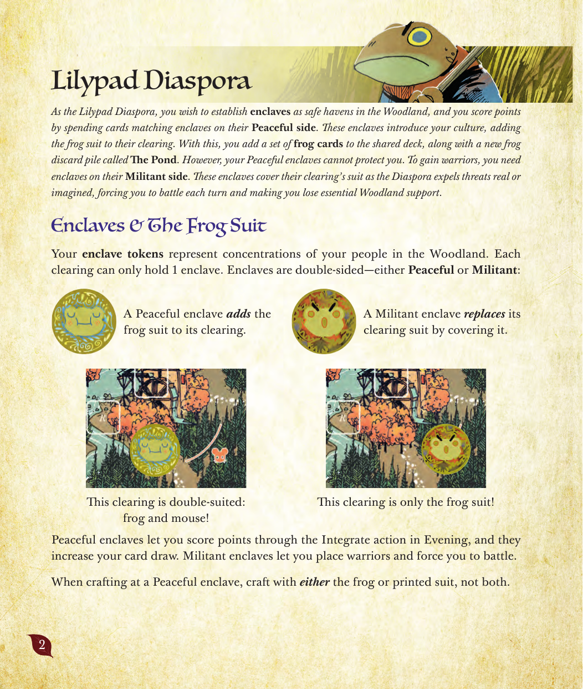
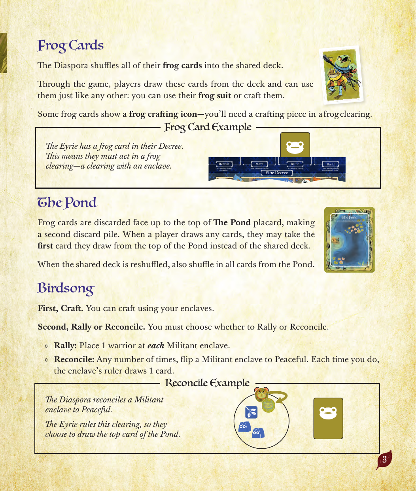
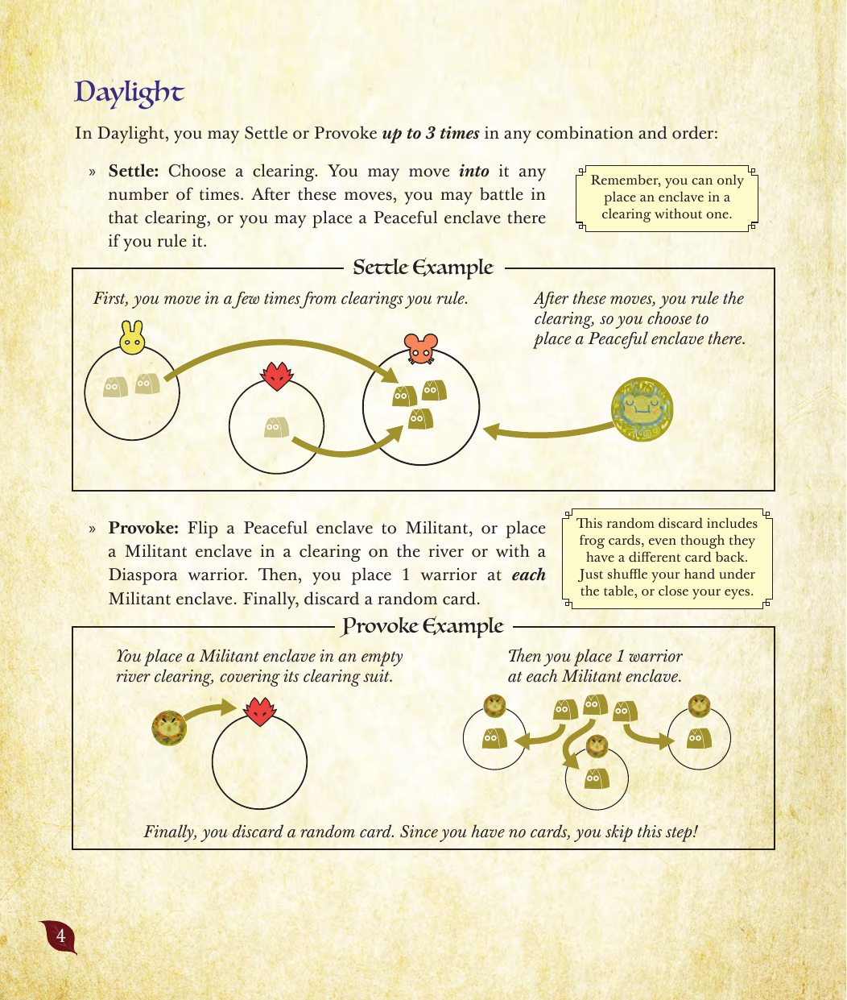
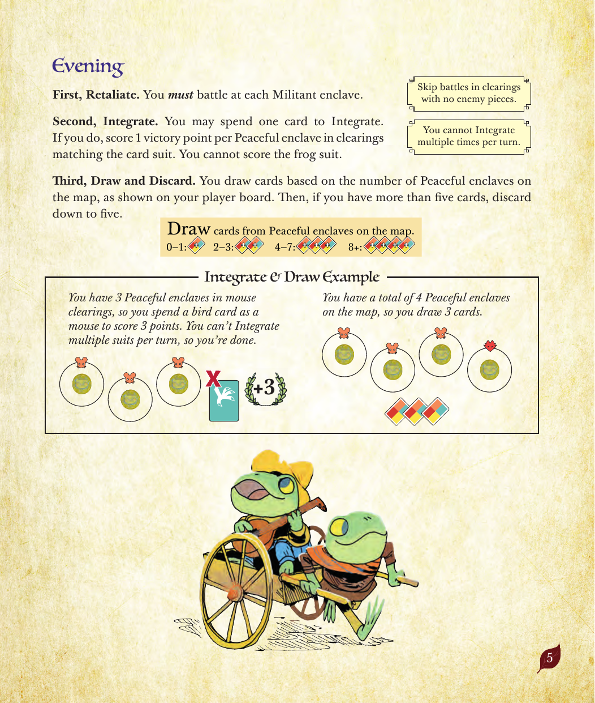
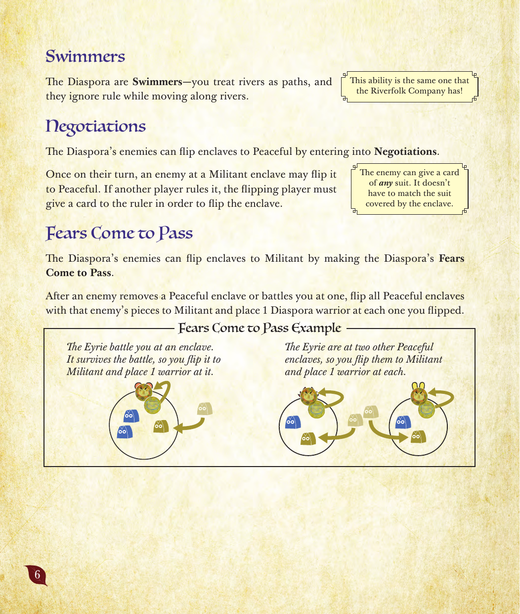
絶え間ない内戦に病んだ黄昏議会は、対立を終わらせようと働きかける。集会を開くことで、議会は正当性を得ながら、敵の建物やトークンを「監督」する。議会の集会はまた、その開拓地を「統治」し、そこでの敵のアクションを制限できる。十分な力があれば、議会は集会を強化して森の平和と結束を推進できる。議会の使命は、敵が好意を求めて「請願」してくるたびに獲得・配置できる、忠誠兵という前衛部隊によって支えられている。
議会は集会によって力を得る。集会は閉鎖面から始まる。夕闇フェイズには、さまざまな方法で集会を統治状態に裏返すことができ、閉鎖・統治のいずれであっても自分の集会でアクションを行える。
統治面の集会はその開拓地を「統治」する――そこにいる敵はクラフトすることも、駒を裏返す・配置する・取る・除去することもできない（戦闘中を除く）。夕闇フェイズには、敵の建物やトークンのある統治中の開拓地から勝利点を得る。
自分のプレイヤーボードには、自分の供給庫から忠誠兵として兵士を4体まで保持できる。これらは自分のターンのさまざまなアクションで獲得するか、敵が自分のターンに自分（議会）へ「請願」した場合に獲得する（11ページ）。鳥歌フェイズには、「集会の設立」アクションで、または敵に請願された場合に、忠誠兵を配置できる。敵が集会を除去したとき、忠誠兵を1体除去する。
自分のターン中に何度でも、敵は議会に対し、集会を閉鎖状態に裏返すよう請願できる。議会はそうしなければならないが、忠誠兵を1体獲得（供給庫から議会の兵士を空いている忠誠兵の枠に配置）するか、その集会に任意の数の忠誠兵を配置するかを選んでよい。
まず、アクションを行う。何度でも、手札からカードを1枚公開して、公開したカードに一致する開拓地で以下のアクションを1つ行える。
休眠。 敵が支配する集会を、その閉鎖面に裏返す。
まず、森の民の招集。任意の順序で、鳥歌フェイズに公開した各カードを手札に戻し、一致する集会で行動する。これらのカードは1枚ずつ戻す。
鳥以外のカードを戻したとき、一致する集会で「策動」または「放逐」を行ってよい。
鳥カードを戻したときは、任意の集会を「強化」してよい：戦闘ダイスを1個振り、振った数に等しい数の自分の兵士をその集会から除去する。その後、除去した兵士の数に等しい忠誠兵を得るか、その集会を支配していれば勝利点を1点得るかを選ぶ。
次に、啓発。集会でカードをクラフトしてよい。クラフトしなければ、自分の集会トラックに表示されているアイコン1つにつきカードを1枚引く。
第三に、休会。選んだ集会を除去してよい。自分が支配する集会を統治状態に裏返す。
第四に、監督。敵の建物やトークンのある開拓地にある統治中の集会の数に基づいて、自分のプレイヤーボードの表示どおりに勝利点を得る。
第五に、カードを引いて捨てる。カードを1枚引く。その後、手札が5枚を超えていれば5枚まで捨てる。
議会は、放浪部族が防御側でない限り、自分の集会において平和維持者である。議会以外の誰かを防御側として行われる集会での戦闘では、自分の兵士を防御側の兵士として加えなければならない。ただし、自分の兵士は防御側自身の兵士がすべて除去された後にのみヒットを受ける。
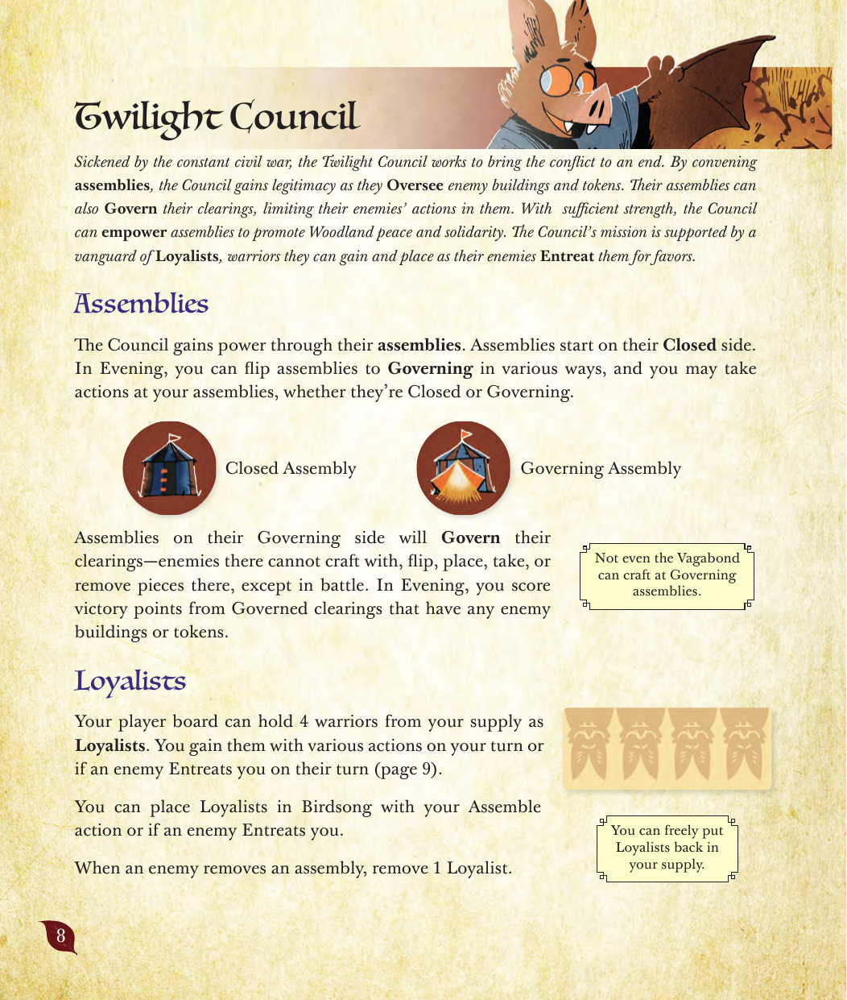
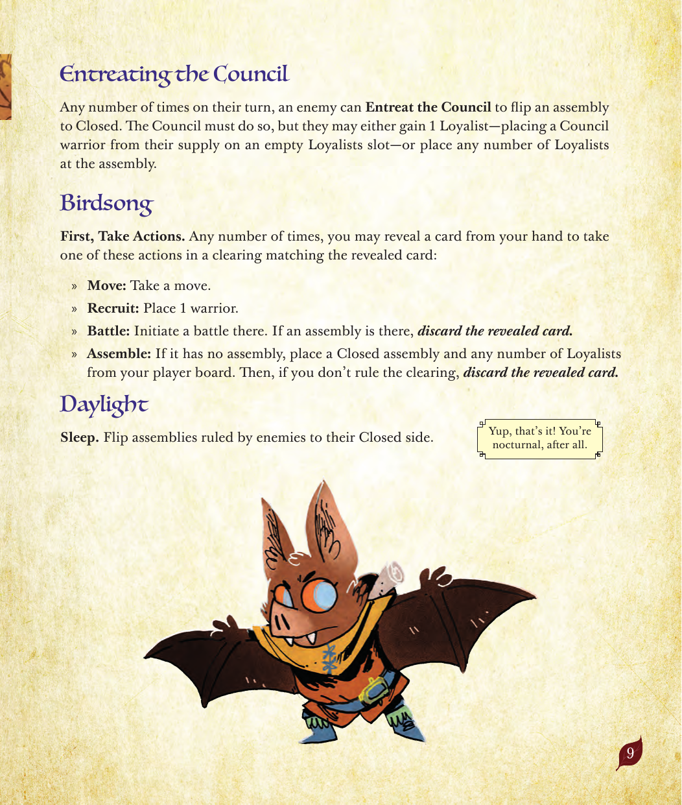
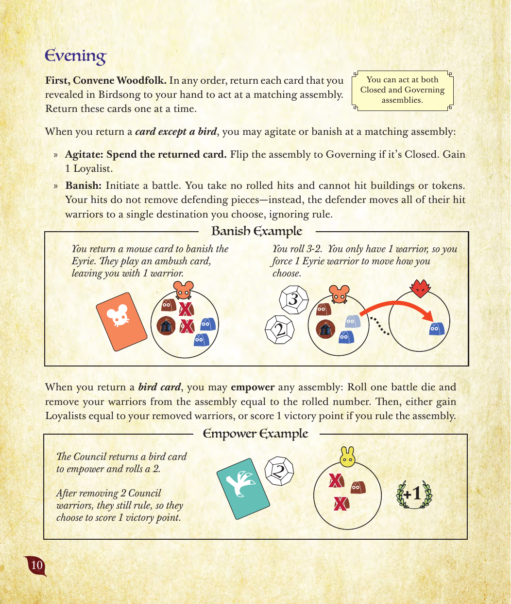
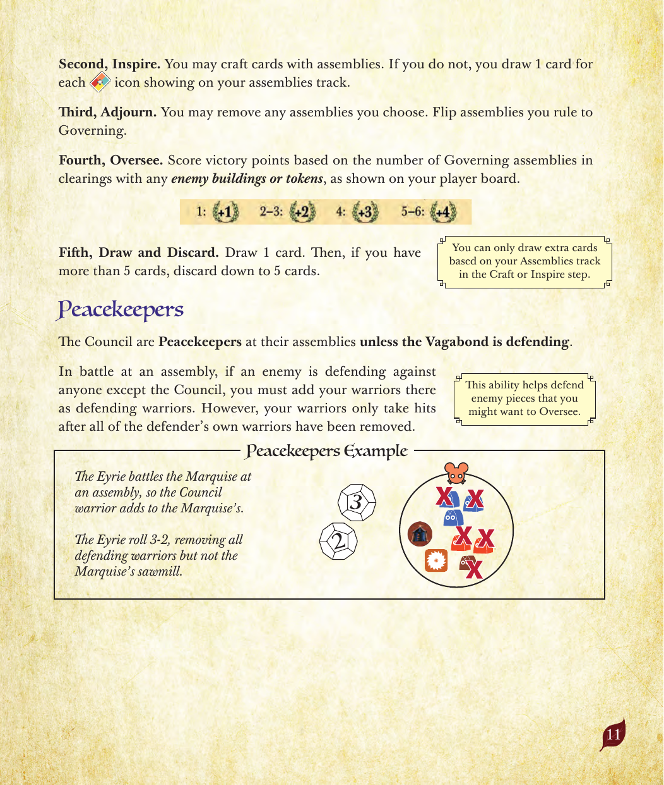
深林無頼は、貧しき者を助け、争う派閥たちと戦闘して名声を得ようとする、ならず者の一団である。彼らの兵士は捕虜として森へ連れていかれる。毎ターン、深林無頼は3人の船長のうち1人で行動し、騒がしいスカンクの一団がそれを支える。しかし彼らは統率を欠いた散り散りの一団であるため、船長たちは再び行動する前に「休息」を取る必要があり、その間に敵は深林無頼の目をかいくぐって捕虜を救出する機会を得る。
深林無頼は、支配を無視して樹林に出入りできる3人の独自の船長の兵士に率いられている。毎ターン、その船長カードを自分のプレイヤーボードの「行動中の船長」枠に置くことで、行動する船長を1人選ぶ。それが行動した後、その船長カードを裏向きにして脇に置く。
その後のターンでは、裏向きの船長で行動することはできない。しかし、3人の船長すべてが裏向きになると「休息」を取り、それらの船長カードを表向きにして再び行動できるようにする。船長は準備時と鳥歌フェイズの「準備」ステップ（14ページ）以外で配置することはできず、蜥蜴教団の「改宗」アクションなどで置き換えることもできない。
準備の際、各船長はその旗に示された開始アイテム2つを、自分のプレイヤーボードの隠し場に加える。合計で6つのアイテムを用意する。プレイ中にクラフトまたは取得したアイテムは隠し場に置く。昼光フェイズには、隠し場の表向きのアイテムを裏向きにして特殊アクションを行える（14ページ）。裏返したアイテムは、3枚の船長カードすべてが裏向きになるまで裏向きのままである。その時点で「休息」を取り、船長カードとともにアイテムも表向きにする。
スカンクの兵士10体の一式を持つ。船長が移動するとき、その船長とともにスカンクを移動させることができる。船長と同様、スカンクも支配を無視して樹林に出入りできる。
名声トークン8個を持つ。各開拓地は名声を1つ保持できる。自分のアイテムの特殊アクションの多くは名声を配置する（14ページ）。また、自分の船長が攻撃側となる戦闘の終了時、その船長がまだ戦闘の開拓地にいる限り、そこに名声を置く。夕闇フェイズには名声に基づいて勝利点を得て、名声はアイテムで行うアクションの一部を強化する（14ページ）。敵が名声を除去したとき、自分の支援者は「逃走」する――敵が選んだ隣接する樹林にスカンクを1体配置することを強制される。
船長が戦闘で派閥を攻撃したとき、ヒットを与えた防御側の兵士1体を捕虜として取る――支配を無視して、捕虜のいない樹林へ移動させる。これは移動なので、その樹林は隣接していなければならない。
夕闇フェイズには捕虜に基づいて勝利点を得る。「休息」を取るとき、1人の敵が自分の捕虜のいくつかを解放する機会を得る。捕虜は、それを所有する派閥によっていかなる形でも使うことができない。
準備。 表向きの船長カードを1枚、自分の「行動中の船長」枠に置く。その船長の駒が地図上になければ、それを任意の樹林に置き、その樹林とそれに隣接する樹林からすべての捕虜を除去する。このターンの昼光フェイズでは、アクションを1回少なく行う。
まず、自分の船長が行動する。「行動中の船長」枠の船長で、以下のアクションを最大4回まで行ってよい。鳥歌フェイズに船長を配置した場合は、代わりに3回までとする。
次に、退役。「行動中の船長」のカードを裏向きにして枠から外し、自分のプレイヤーボードのそばに置く。
まず、権力者を嘲笑う。捕虜2体につき勝利点を1点、地図上の名声2つにつき勝利点を1点得る。
次に、弱者を守る。地図上の名声1つにつき1回、一致するカードを1枚消費してスカンクを1体置いてよい。
第三に、休息。すべての船長カードが裏向きであれば、すべての船長カードとアイテムを表向きにし、最も多くの捕虜を持つ敵が開拓地を1つ選び、隣接する樹林にいるその派閥のすべての捕虜をその開拓地に置く。最多捕虜数で同点なら、自分（深林無頼）がどちらの敵に捕虜を置かせるかを選ぶ。
第四に、カードを引いて捨てる。カードを1枚引き、5枚まで捨てる。
本拡張には3人の船長――看守・剣闘士・いかさま師――が含まれる。最初のゲームではこの3人を使うとよい。
深林無頼には合計12人の船長がいて、対応する放浪部族のパウンを兵士として使う。例えば「盗人」は基本ゲームの「盗人」パウンを使う。残り8人の船長専用の駒が欲しい場合は、河の拡張と放浪部族パックを入手するとよい。あるいは単純に代用品を使ってもよい。
深林無頼は、兵士を捕虜として取るという性質上、いくつかの特殊な派閥相互作用を持つ。これらは付属のリマインダーカードに示されている。
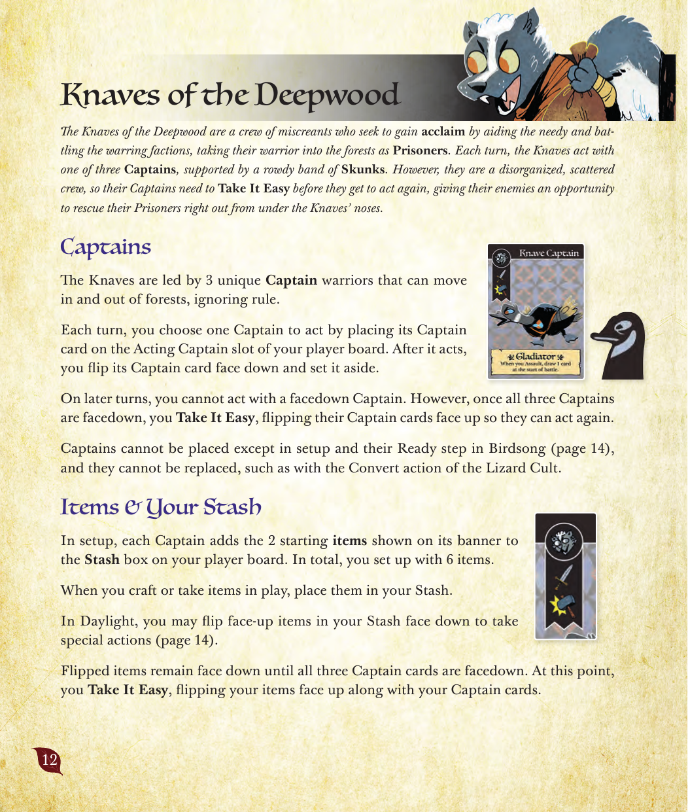
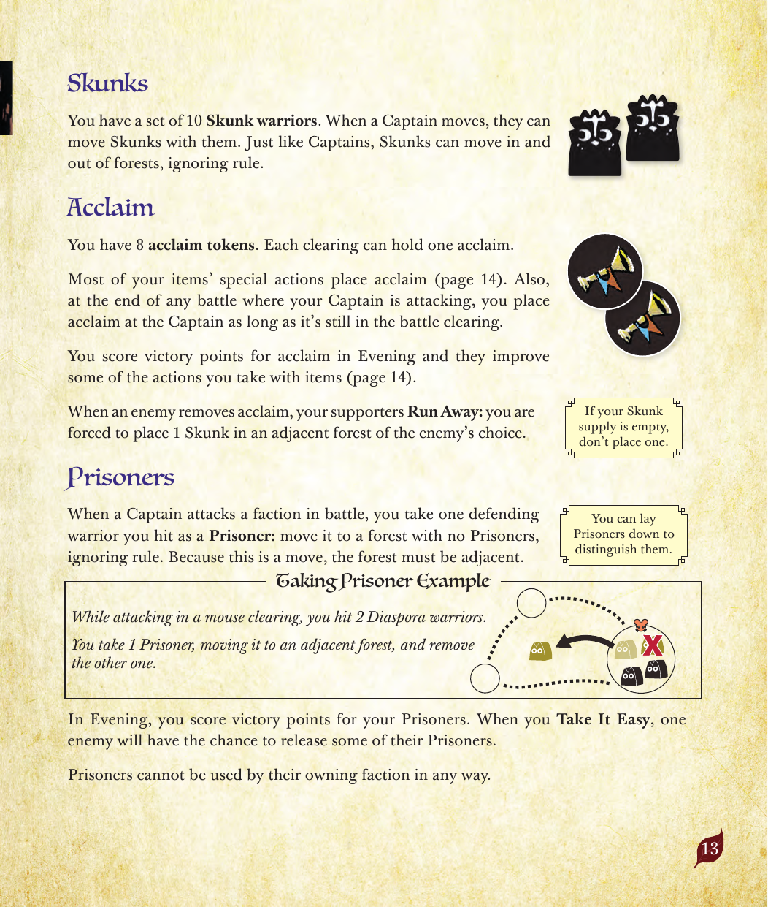
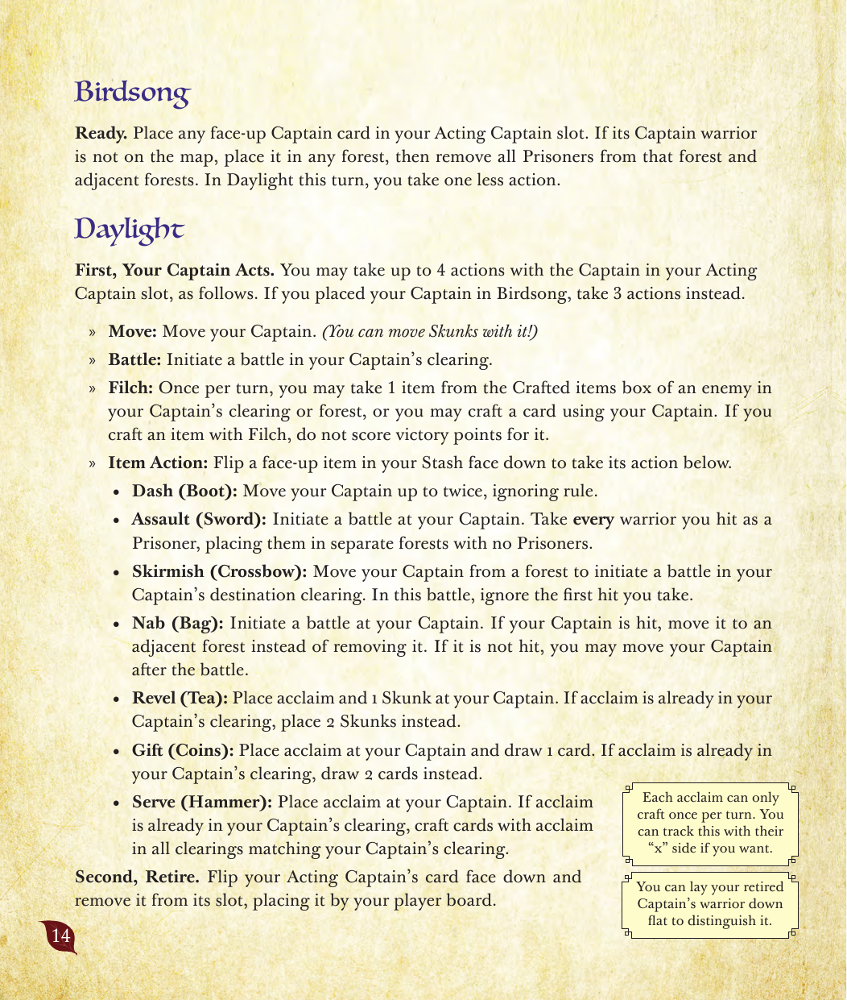
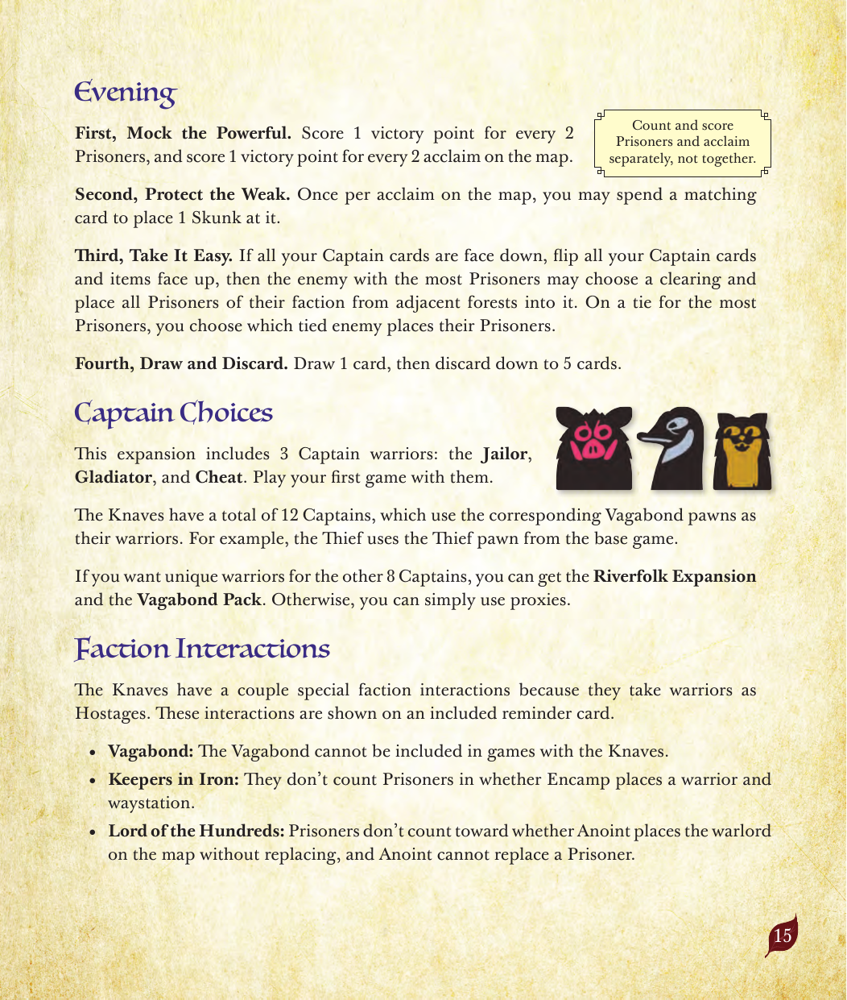
12個のスートマーカーを集め、裏向きにしてシャッフルする。マップ上の各開拓地にスートマーカーを1つ置き、その後すべてを裏返す。
上の橋を支える壁は、その上下の樹林を分断する。
下の橋はその下の樹林を分断しない。橋の右側から延びる道もその樹林を分断しない。これを区別するため、白ではなく橙色で示されている。
峡谷の縁はその樹林を分断しない――樹林とは道によって囲まれた領域全体である。
12個のスートマーカーを集め、裏向きにしてシャッフルする。マップ上の各開拓地にスートマーカーを1つ置き、その後すべてを裏返す。
番号のない「R」枠に廃墟を2つ、最も小さい番号の「R」枠に廃墟を2つ置く。
増水マーカーはもはや開拓地ではない――いくつかの道と、いくつかの増水した道を持つ。増水した道は樹林を分断するが、隣接する開拓地間の移動には使えない。
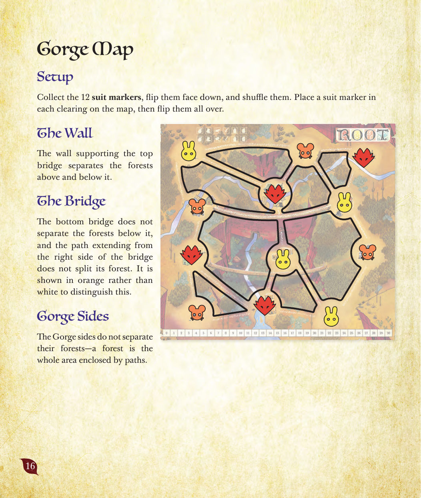
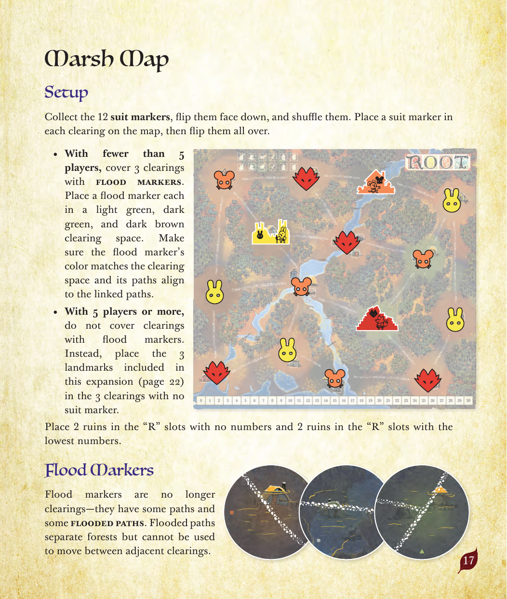
本拡張には3つのスート付きランドマーク――狐の穴・兎の町・鼠の家――が含まれる。これらのランドマークは、それぞれその開拓地に狐・兎・鼠のスートを加え、以下の効果を持つ。これらは5人以上での湿原マップ（16ページ）で使用するが、準備の際に他のマップにも追加してよい！ 一致するスートの開拓地に置くことを推奨するが、冒険したい場合は異なるスートの開拓地に置いて複数スート化してもよい。ランドマークの完全なルールは『根の法典』のA.5節を参照。
移動の際、狐の開拓地を狐の穴に隣接しているとみなし、それらの間を移動する際は道を無視してよい。
昼光フェイズに1回、兎カードを1枚消費して、自分の駒のある他の兎の開拓地1つにつき兵士を1体、兎の町に置き、その後兎の町で戦闘してよい。
戦闘で、鼠の家を除く鼠の開拓地からあるプレイヤーの兵士が除去されるとき、それらを鼠の家に置いてよい。
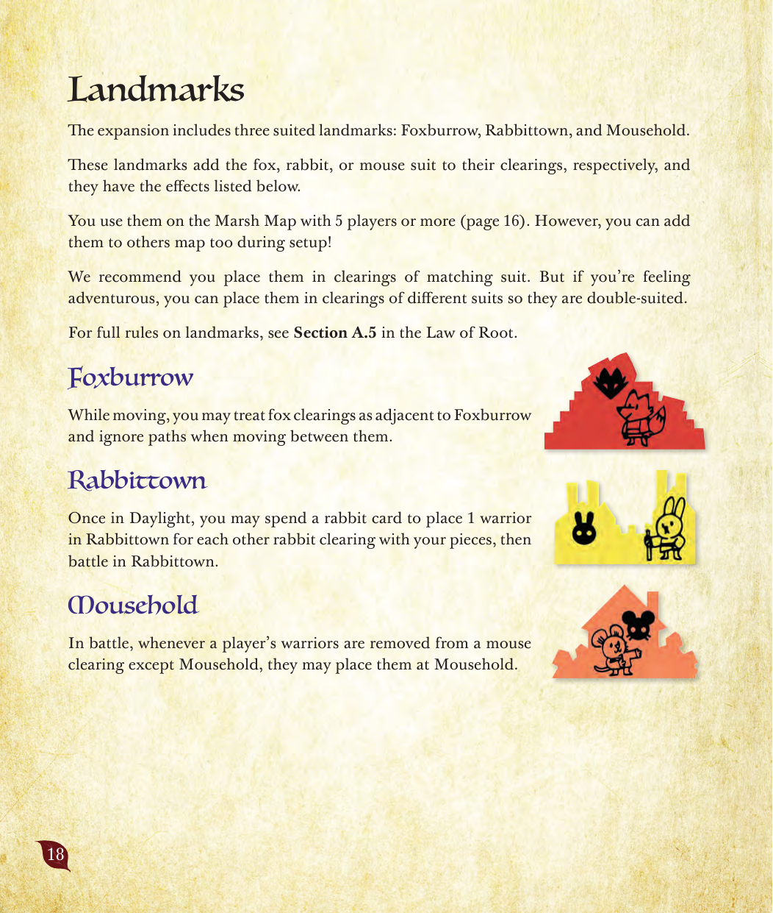
本拡張を『ROOT』の他のコンテンツと互換性を持たせ、プレイしやすくするための更新カードと新規コンポーネントが含まれている。
本拡張の派閥用の高度な準備カードが含まれている。残りの派閥用の高度な準備カードを入手するには、宝の拡張（Marauder Expansion）が必要である。高度な準備のルールは『根の法典』の付録Aを参照。
基本ゲーム・河の拡張・「亡命者と支持者」デッキのカードを置き換える、更新されたカードがいくつか含まれている。これらは後から発売されたコンテンツとの互換性を高める新しい文言になっている。
これらのマーカーは、自分のプレイヤーボードのターンフェイズの横に置くことで、そのフェイズに発生するクラフトした効果や派閥能力（河民商団のサービスなど）を発動するよう思い出させてくれる。
新しい色の戦闘ダイス1組と、廃墟・アイテムのフルセットが含まれている。これにより、「亡命者と支持者」デッキや「従騎士と弟子」デッキのような第2のデッキがあれば、ROOTを同時に2ゲームプレイできるようになる。
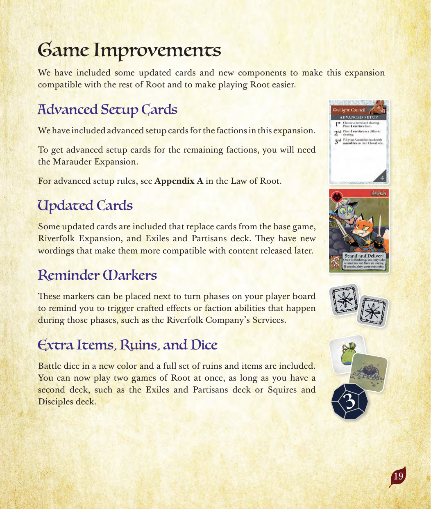
原書では、プレイ人数（2人・3人・4人・5人）別に推奨される派閥構成が図解で示されている。詳細な組み合わせは原書ページの図版を参照のこと。基本的な考え方は、本拡張の3派閥（蓮葉流民・黄昏議会・深林無頼）を、基本ゲームおよび他拡張の派閥と組み合わせ、5.2節「リーチ」の合計値を満たすようにする、というものである。
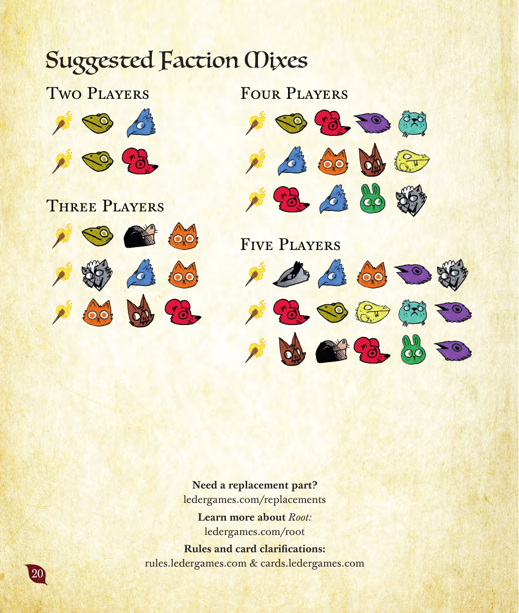